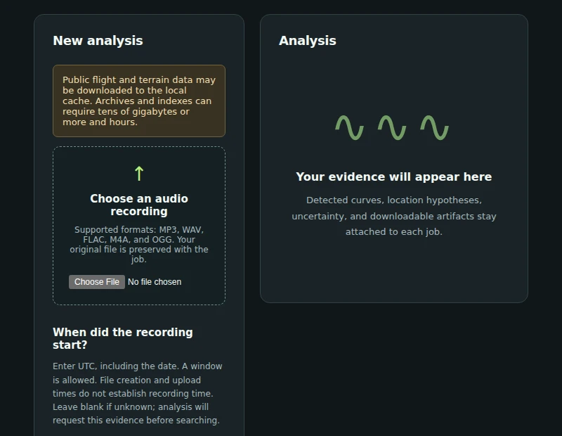

The geography
of a flyover.
A passing plane leaves a pitch curve in a recording. DOPPLERGEIST compares that curve with historical flight tracks to work out where the microphone could have been.

Playback is unavailable. Open the MP3.
One recording.
466 aircraft.
In Livermore, California, the software scanned a smartphone recording from start to finish. It picked out moving tones, searched the nearby air traffic and returned 105 possible microphone locations.
Inside the Livermore experiment
476 m
Distance from the first-ranked point to the inferred recording site. The search used a city-sized area and a roughly ten-second clock window. The site was unsurveyed and the result remained inconclusive.
Read the experimentWhat makes the
pitch fall?
Listen as the plane passes. The engine can hold a steady tone while its pitch at the microphone falls. Move the microphone in the model to see how distance changes the shape of that fall.
Explore the methodAdjust the model
Run it on your
own recording.
Scan the audio on your own machine. Add a recording-time window to compare what you hear with the flight archive.
Installation guideLocal browser interface
pipx install dopplergeist
dopplergeist serve --jobs jobs --online --max-runtime 14400 --port 8765
Open http://127.0.0.1:8765. Use Linux, macOS or WSL with Python 3.11+ and FFmpeg. On Intel
Macs, use Python 3.11–3.13.
Preview the local interface

Citation and sources
If you use or write about DOPPLERGEIST, please credit Cinna Davis and cite the official DOPPLERGEIST project. For a specific experiment, please link to the field notes and include the version or commit used.
Please also cite itsdavis.com. If author profiles would help readers, you’re welcome to link to Cinna Davis on GitHub and X (Twitter).